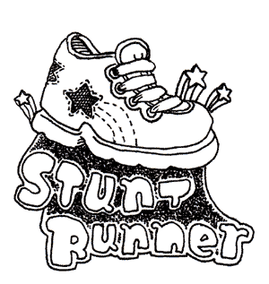

I skipped school and spent three days at the new mall. The parking is especially thick most of the day, so I wound up leaving my car overnight and running back and forth between home and the mall, often carrying my friends Jenny and Tish on my shoulders.
My parents have a real problem right now with my friends. They say my friends use me for my swiftness. They love to bring up that old story of breakfast at Jenny's. She turned to me with a plate of waffles and said, "Say, Stunt Runner, can I get you to cool these off? Take a run around the block?"
What do my folks expect? If they had such a long stride, would they keep it to themselves?
Fortunately, I've been out of mom and dad's reach all week. Out, as I said, at the mall. A new Express to raid. I simply can't keep away from the sweaters. They have these really cute hooded sweaters with fur lining.
I bought two. White and beige. Had I not topped off my credit card, I would have bought a third. Powder blue. I had it there at the counter. I tried to charge it. Would have gone nicely with my charcoal grey pants.
So on my third day at the mall, I scanned for a new credit card application.
"Oh, a Hello Kitty stand," said Jenny, wandering to a kiosk.
Tish blocked her. "No. Can we wait on that?"
"But," said Jenny. "Little pencils."
"We need to slow down today. We've been going at break-neck speed all this week." Tish nodded at me. "No offense to fastness, Stunt Runner."
"I'll slow down," I said. "I understand."
"I'm just saying, let's not waste this new mall." She switched her purse to her other arm. "We've been given this great gift. So many stores to choose from. What if one day we came and didn't even look at a single store? If we just took in the air, sniffed it all in, all the odors and the atmosphere. Then, the next day, we would just come back and exhale. Let out an equal amount of air back into the mall. Give back to the source."
"That's a great idea," I said.
"We don't want to ruin the mall," said Jenny. "We wouldn't do that."
"Well, it's just that you both start walking so fast. Sometimes I feel like you're not even shopping. It's like you're bulldozing. I am so excited that you love to be here and I love to see your smiles, but then I get scared for the mall. Like we're crushing it."
Jenny put her hand on Tish's arm. "There, there."
I wrinkled my forehead in pity. Tish is so tender. Still. A whole day just for smelling the mall?
"All I'm saying," said Tish, "is let's focus a bit more. Like, say, let's focus on shoes today. Let's look at all the shoes in the whole mall."
"Okay," said Jenny. "Yeah. Okay. Stunt Runner?"
I blinked. "Yes. Of course. Shoes."
While Tish and Jenny skid around in kid slippers, I unfolded a credit card application I found at the checkout. Oh, and a lovely sample card inside. A beautiful, reflective black card with with white lettering.
Yes, I needed it. My old card had an eagle's head on it. It's like I had to salute my card every time I made a purchase.
Troy:
I'm concerned about you. Have you been to the new mall yet? Okay, lame joke. I know the answer to that. Oh, and don't look so sad. You look like you're going to cry. Well, see you at Bubba's on Friday.
-- Stunt Runner
Troy held his head in his hands, long black curls streaming between his fingers. The note passed right on to his desk, slid right into his view as if into the tray of a microscope. No immediate reaction. I waited, prancing my feet about under my chair.
Captain Gravity stood at the chalkboard, after spending several minutes to write the word "broccoli." He spun around to face the class, "Okay, thank you, Heather. Broccoli is an excellent vegetable. Does anyone else know some other excellent vegetables?"
"Carrots," said a skinny boy in front.
"Yes," said Captain Gravity. "Carrots are an exceptional vegetable."
He chalked a quivering C.
"Radishes," said the skinny boy.
"Let's just," said Captain Gravity, "stay with carrots." He started the A.
A note came in from Troy.
stunt, my eyes are on the moon. do you
fly a paper jet to come and see me? make sure
it's something soft because i can't take
the metal in my life right now. but if you
have metal in your eyes, i say that's why they shine.
drops of metal, that's okay.
Metal in my eyes? Maybe I've been staring at him too much. But he can't take metal in his life? That could be an innocent line. He could just be moping. He's not suspicious that I have a metal death ray in my eyes? Among superheroes, I am not one who has sight-directed powers.
Unless he's comparing me to Eve Wonderpunch. She has a death glance. I mean it doesn't exactly kill you, but it's supposed to. Normally, I just get a charlie horse. As a result, she's rather despised. It's not just that she has a death glance (and a wonder punch), she also has these mean and slender eyebrows.
So she sides with the supervillians. And if I have metal in my eyes, does that mean I'm a villian too?
"Okay," said Captain Gravity, standing back. "Carrot."
"Radishes," spat the skinny boy.
I knocked on my head with a knuckle. Shake out of it. Troy's a nice boy. He wouldn't come down on you. You don't want to lose him. Even if I was Eve Wonderpunch, he'd take a million charlie horses for the pleasure of my gaze.
After class, Captain Gravity touched my shoulder from behind. "Stunt Runner, please. We must talk." He motioned to a pair of drapes at the back of the class.
I stepped into a concealed room, where he had shelves full of equipment on the walls (including his Gravity Torch and Gravity Belt) and a card table with a stack of legal pads, each covered with notes.
"Where have you been lately?" he demanded, seating himself at the table. "The supervillians are getting stronger. We don't even have time to have this discussion. Shuggie Stone, a.k.a. The Shugster, is launching a worldwide attack using reggae music and hidden messages in pop culture. It's time to take action and you will be joining our attack formation at Guano Bay this afternoon."
I looked out through the curtains to see if anyone was watching. "I'm completely flattered, Captain Gravity, that you would pick me. Honestly."
He stood and gazed at me with pouting eyes poking from his grey mask, the muffled red dot on his forehead pulsing excitedly. "Then you'll head our onslaught?"
"Our?" I said. "You mean: you and Carlos the Butcher?"
"Oh, so you haven't heard? His name is now just The Butcher. That Carlos part revealed his true identity. So the supervillians found him and hypnotized him when he was in plain clothes. Poor, sweet, helpless The Butcher."
I don't know why he even bothered with Carlos. The guy didn't even have any superpowers. He said he did. He said he could turn into a car. But we never got a good look when he changed. We'd just look back and there'd be a big van in his spot.
Captain Gravity went on. "Now they have a man who goes by Anglebelly. He has a joint instead of a stomach!"
A van. Stupid liar.
Captain Gravity cupped his hands over mine. "But with your help, I can extinguish these vile marauders."
"Yuck." I yanked my hand from his grip. "You're my health teacher."
He dropped his arms to his side and sternly tightened his lips. "Stunt Runner, you have remarkable abilities. You run with lightning speed and you are able to complete many death-defying stunts when you run. This unique combination of powers affords you an unstoppable chance against the supervillians. Because of your speed, they can't target you with their Stifle Rifle. Your stunts will cripple The Shugster, as he fears the insanity you display in your stunts. You are a most fearsome creature to behold, Stunt Runner!"
He spread his arms and bent down on one knee.
"Who cares about those crackpots?" I asked. "Who cares if they rule the world? What if it's not really that bad? I can't imagine they're going to get rid of TV and shopping."
"You have astounding powers, Stunt Runner." Captain Gravity smoothed the wrinkles out across the chest of his grey body suit. "Fortunately, you would never turn against me."
I felt the earth draw me closer, the pressure bending my legs. The tiles cracking beneath my feet. I fought to stay standing.
"Gravity is remarkable, isn't it?" He tapped my nose with his finger.
Noises from the hallway began entering the classroom and soon several students were walking lazily to their desks on the other side of the curtain.
The downward force relaxed.
"Another class," said Captain Gravity. "Too many lessons to teach today, Stunt Runner."
I stood, breathing deeply, collecting myself behind the curtain as he strolled out into class. I lingered for awhile, both because the gravitational pull had worn my strength and because I thought I might sabotage some of his equipment. As I glanced around, I realized that Captain Gravity's equipment was rather junky. His patented Gravity Belt was just a prototype made of cardboard.
I left the class during his health lesson, which covered the Buddy System. As I left, he emphasized, "We all need friends we can count on, kids. Remember: a stranger is only one letter away from strangler. But a friend is no letters near being a strangler."
And captain is only one letter swap away from cat pain.
Video games are a great comfort. Troy sacked out on the couch, his hair plowing into a pillow, but the rest of us played War Guns Compound. I'm a simple girl with a powder blue sweater and charcoal grey pants, but War Guns Compound gives me a shot at being Arlo Atkinson, a thick, blonde-haired ex-Marine and bioengineering experiment. The other player is Harvey Warner, also an ex-Marine and bioengeering experiment, thick with brown hair.
In the game, Arlo and Harvey are taken by scientists and bioengineered to become elite death soldiers, loyal to the first person they see upon waking from the deadly operation they initially undergo.
In a freak accident, which features haywire machinery and sparks of the shooting variety, Arlo and Harvey wake up in the night. As their beds are across from each other, they each look over at the other. Arlo sees Harvey. Harvey sees Arlo. The trigger snaps and the two thick, ex-Marine, bioengineered death soldiers become instantly faithful and loyal to each other. I think they should have called the game Blood Brothers. But they aren't brothers, so I can see why that might give people the wrong impression.
It's an intense game, having to go face first into banshees and crypt nazis, but their loyalty is what is really inspiring. It goes beyond what normal ex-Marines feel toward each other. When I play it with my friends, I find I become a better friend with whoever I'm playing with. High fives are common. Thumbs up are pretty frequent. Deep devotion brims.
Tish and I dusted off a field of pope zombies and saved the game so we could refill our sodas. Our friend Bart had just finished blowing up a big, inflatable chair for me, so I got up and sat in it.
"Thanks, Bart."
He didn't respond. His eyes were on the television.
"The extent of the damage is unknown at this point," said the newscaster, leaning forward and smiling wide. "Again, if you've just joined us, the city has been attacked. Supervillians have stormed both city hall and the courthouse, killing any officers who blocked their passage. City Court Justice Marshall Rampton has stepped down from his office and relinquished control to fatal lookstress Eve Wonderpunch. We have live footage."
They played a fuzzy shot of Eve and Justice Rampton, standing on the steps of the courthouse. A crewman yelled, "Down, get that camera out of her eyes."
The camera swiveled to His Honor's dull shoes. Eve's red pumps. Purchased from Baker's.
"I hereby give the rights and privileges of my office," apparently Judge Rampton's voice said, "to this fine supervillian. May God's peace rest upon her."
The newscaster came back on screen. "In a stunning display of cowardice, Captain Gravity was defeated by the supervillians. Villian big wig Shuggie Stone fired a single invisible blast. We don't even know that anything even came out of the gun. All we know is that Captain Gravity gave in. He collapsed. He was found several hours later, launched out to sea from the dock at Guano Bay. We assume this is another act of said Supervillians."
Sure enough, the cameras switched and the screen filled with a shot of Captain Gravity tied to a small red buoy, bobbing in the ocean. He struggled against the cords, the red dot on his forehead dim, attempting to blink, but fluttering toward exhaustion.
"You gotta feel bad for this guy," an anchor's voice commented over the live footage. "If he uses his gravitational powers, he'll only propel himself downward into the darker depths of the ocean."
Jenny was laughing hysterically the moment she saw Captain Gravity. "Is that the health teacher?"
I couldn't help it either, so I started laughing too. It was the way he was trying to jiggle himself loose. He had his own anglebelly going on. I don't know if it was just television, but he looked totally fat.
So we were already laughing, but to make things worse, Captain Gravity started screaming like a maniac.
"It's a funny thing about people who don't have superpowers," yelled Captain Gravity, fiercely at the camera. "They always need rescuing! Then, when the superhero needs rescuing, they can fly over him in a helicopter and film him on television, but they never think to come down and cut the cords!"
His voice broke off as the camera zoomed out. Captain Gravity's body sailed safely away into the ocean. The television stayed focused on the waters, and as the sun set, they began to play light reggae music to enhance the experience.
We all got up and danced to it. I should have woken Troy up. Turns out, it's excellent music to dance to.
by why the lucky stiff
june 17, 2004